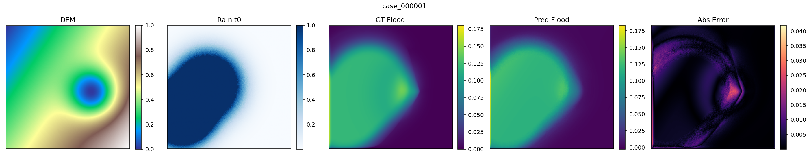
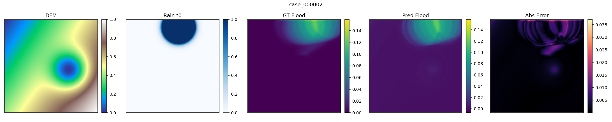
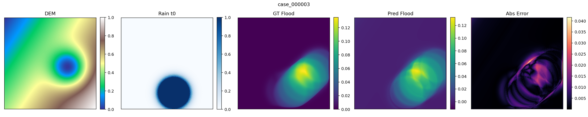
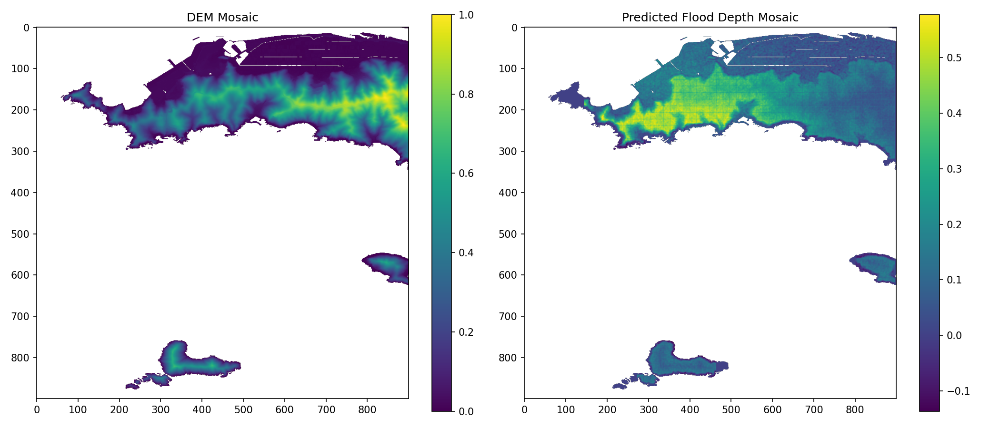
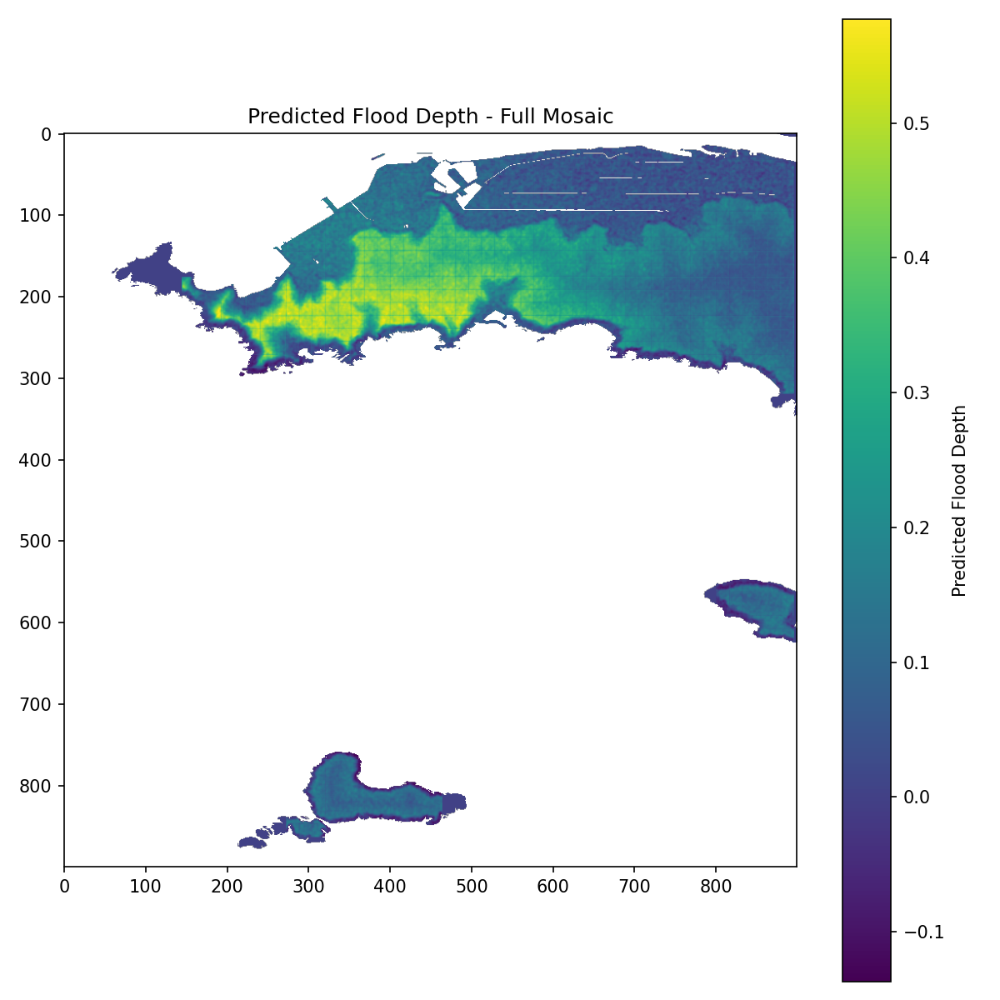

🌊 TwinMind-Disaster
TwinMind-Disaster is a research prototype demonstrating how AI Digital Twin technology can be applied to flood prediction and terrain-aware disaster monitoring.
The system integrates:
- 🗺️ Terrain data (DEM)
- 🤖 Deep learning (U-Net)
- 🌐 Digital Twin visualization
- 📡 Sensor placement optimization
🎬 Demo & Code
💡 TwinMind Concept
TwinMind is an AI Digital Twin platform.
Instead of humans deciding where to observe, AI determines optimal observation locations.
🔄 System Flow
This prototype focuses on flood prediction using terrain data.
🏗️ TwinMind System Architecture

✨ Features
🗂️ Terrain Processing (DEM)
Terrain elevation data is processed from DEM XML files.
Processing Pipeline:
Generated Datasets:
data/dem_npy_grid/dem_for_training.npydata/dem_npy_grid/slope_for_training.npy
🌊 Flood Prediction Model
Prototype model: Small U-Net
Architecture:
Input:
- DEM (Digital Elevation Model)
- Slope
Training script: scripts/train_unet.py
📊 Experiment Tracking
Experiments are tracked using MLflow.
| Parameter | Description |
|---|---|
use_dem |
Use DEM data as input |
use_slope |
Use slope data as input |
epochs |
Number of training epochs |
batch_size |
Batch size for training |
Experiment logs: mlruns/
🖥️ Digital Twin Dashboard
Prototype dashboard: ui/twinmind_dashboard.py
🖼️ Dashboard Preview
Interactive flood risk visualization and terrain analysis

Future capabilities:
- 🏔️ Terrain visualization
- 🔥 Flood risk heatmap
- 📡 Real-time sensor integration
- ▶️ Simulation playback
🌊 AI Flood Prediction Examples
The trained U-Net baseline predicts flood depth from DEM and rainfall time series. Below are example outputs generated from real case data on the A5000 server.
🧠 What each panel shows
Each prediction image contains five panels: DEM, Rain t0, Ground Truth Flood, Predicted Flood, and Absolute Error.



These examples demonstrate that TwinMind-Disaster is not only a concept demo, but a working terrain-aware flood prediction pipeline with training, experiment tracking, and visual inference outputs.
🌍 Full Terrain Flood Prediction
TwinMind-Disaster can predict flood depth across the entire terrain mosaic. Using DEM, slope, and rainfall time-series inputs, the trained U-Net model generates a full flood depth map over the region.
AI Full-Area Inference
The model performs sliding-window inference across the full DEM mosaic and reconstructs a continuous flood prediction map.


📁 Project Structure
⚙️ Installation
# 1. Clone repository
git clone https://github.com/gang0-jpg/TwinMind-Disaster.git
cd TwinMind-Disaster
# 2. Install dependencies
pip install -r requirements.txtrequirements.txt (example):
numpy>=1.24.0
torch>=2.0.0
mlflow>=2.5.0
streamlit>=1.28.0
matplotlib>=3.7.0
scipy>=1.10.0🚀 Training
# Run default training
python scripts/train_unet.py
# Run with custom parameters
python scripts/train_unet.py \
--epochs 10 \
--batch_size 4 \
--use_dem True \
--use_slope True✅ Training results and metrics will be automatically logged in MLflow.
📊 View experiments: mlflow ui → open http://localhost:5000
📦 Data Source
This project uses terrain data from the Geospatial Information Authority of Japan (GSI).
Source: GSI Basic Map Information DEM (Kiban Chizu Joho / 基盤地図情報)
🔗 https://www.gsi.go.jp/kiban/
Note: DEM data is not included in this repository. Users should download the data directly from GSI and follow GSI terms of use and attribution requirements.
🗓️ Roadmap
| Phase | Feature | Status |
|---|---|---|
| 🔹 Phase 1 | DEM preprocessing pipeline | ✅ Complete |
| 🔹 Phase 2 | U-Net flood prediction prototype | ✅ Complete |
| 🔹 Phase 3 | MLflow experiment tracking | ✅ Complete |
| 🔸 Phase 4 | Dashboard MVP (Streamlit) | 🚧 In Progress |
| ⚪ Phase 5 | Sensor placement optimization | 📋 Planned |
| ⚪ Phase 6 | Real-time data ingestion | 📋 Planned |
| ⚪ Phase 7 | Advanced U-Net / Transformer architecture | 📋 Planned |
| ⚪ Phase 8 | Full TwinMind Digital Twin platform | 🔭 Vision |
🔭 TwinMind Vision
Reality Operating System for Earth
"TwinMind is not just analyzing data.
It decides where to observe next."
TwinMind aims to become a Reality Operating System for Earth observation — where AI continuously learns from terrain, climate, and sensor data to predict, simulate, and optimize real-world outcomes.
💡 Key Innovation
AI does not only analyze data. It decides where to observe next.
Traditional systems rely on humans to decide observation points. TwinMind uses AI to autonomously determine optimal sensor placement, creating a self-optimizing observation network.
Potential applications:
| Domain | Use Case |
|---|---|
| 🚨 Disaster Monitoring | Flood, landslide, earthquake risk prediction |
| 🌍 Climate Observation | Extreme weather modeling & adaptation |
| 🏙️ Smart Cities | Urban flood resilience planning |
| 🏗️ Infrastructure | Bridge, dam, and levee health monitoring |
| 🌱 Environmental Intelligence | Ecosystem change detection & conservation |
📜 License
MIT License
Copyright (c) 2024–2026 Zenji Oka
Permission is hereby granted, free of charge, to any person obtaining a copy of this software and associated documentation files (the "Software"), to deal in the Software without restriction, including without limitation the rights to use, copy, modify, merge, publish, distribute, sublicense, and/or sell copies of the Software, and to permit persons to whom the Software is furnished to do so, subject to the following conditions:
The above copyright notice and this permission notice shall be included in all copies or substantial portions of the Software.
THE SOFTWARE IS PROVIDED "AS IS", WITHOUT WARRANTY OF ANY KIND, EXPRESS OR IMPLIED, INCLUDING BUT NOT LIMITED TO THE WARRANTIES OF MERCHANTABILITY, FITNESS FOR A PARTICULAR PURPOSE AND NONINFRINGEMENT. IN NO EVENT SHALL THE AUTHORS OR COPYRIGHT HOLDERS BE LIABLE FOR ANY CLAIM, DAMAGES OR OTHER LIABILITY, WHETHER IN AN ACTION OF CONTRACT, TORT OR OTHERWISE, ARISING FROM, OUT OF OR IN CONNECTION WITH THE SOFTWARE OR THE USE OR OTHER DEALINGS IN THE SOFTWARE.
🙏 Acknowledgements
- 🗾 Terrain data provided by Geospatial Information Authority of Japan (GSI)
- 🧠 U-Net architecture inspired by Ronneberger et al. (2015)
- 📦 Tools: MLflow, Streamlit, PyTorch, Mermaid
- 🌟 Special thanks to open-source contributors and disaster resilience researchers worldwide
🌊 "Predicting water, protecting life."
— TwinMind-Disaster Project